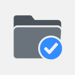

Tab Syncer Lite
Zapisz obecne karty
Pobierz karty
Synchronizuj karty
Gotowy do działania
Używana pamięć: 1.2 MB
Zapisane karty
3
https://developer.mozilla.org/en-US/docs/Web/API/Storage
https://github.com/username/tab-syncer
https://www.google.com/search?q=chrome+extensions+api
Ładowanie zakończone